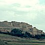
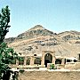
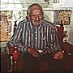
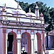
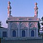

Gallery
The Amirali Mamdani Collection: Preserving Ismaili History Through Visual Media
A large collection of original slides, photographs and films belonging to and shot exclusively by Mr Amirali G Mamdani was presented to The Institute of Ismaili Studies in autumn, 2001. This collection is presently being catalogued and appropriate steps for its preservation will be undertaken over the next few years.
A small selection of images taken by Mr Mamdani during his visits to Iran, the Indian subcontinent and Syria are available for viewing on the website.
|
Over the past 50 years, Mr Mamdani has travelled extensively, visiting various parts of the world, including Canada, East Africa, Egypt, Europe, India, Iran, Pakistan, Syria and the USA. Mr Mamdani’s collection not only encompasses significant events and sites of historical importance in the life of the Ismaili community, but also documents various aspects of the communities in these countries. In recording some of the critical periods of Ismaili history in the 20th century, this collection reflects Mr Mamdani’s lifelong ambition to preserve history through visual media.
|
Mr Mamdani at Agra |
|    |
Iran “It was under such circumstances, when Shi‘i sentiments were gaining increasing popularity in Persia, that the Anjudan revival of Nizarism commenced around the middle of the 9th/15th century, in the imamate of Mustansir bi’llah II… It seems that the Qasim-Shahi Nizari Imams selected Anjudan only after a thorough search for a suitable locality to establish their residence and da‘wa headquarters. Anjudan had a central position… [and] was conveniently close to the cities of Qumm and Kashan, also known as the dar al-mu’minin (abode of the faithful), that were traditional Shi’i centres in Persia… The Anjudan renaissance in Nizari Isma‘ilism also brought about a revival of literary activities amongst the Nizaris.” Daftary, Farhad. The Isma‘ilis: Their History and Doctrines. Cambridge: Cambridge University Press, 1990, pp. 467-469.
|
|
|
Indian Subcontinent “In the meantime, the Nizari da‘wa had spread successfully on the Indian subcontinent… the da‘wa in India was initiated by the emissaries or pirs dispatched by the Nizari Imams from Persia. These emissaries, who probably began their missionary work during the later Alamut period, at first concentrated their efforts chiefly in Sind… Satgur Nur, as noted, is reported to have been the earliest pir or guru sent from Persia to India for the propagation of Nizarism, which in India became designated as Satpanth, that is Sat Panth, the True Path… Pir Sadr al-Din, to whom the largest number of ginans are attributed, played a key role in the propagation and organization of the Nizari da‘wa in India… Sadr al-Din was succeeded as pir by his eldest son Hasan Kabir al-Din. According to the well-known hagiographical work written in India by Abd al-Haqq b. Sayf al-Din Dihlawi (d. 1052/1642), Kabir al-Din traveled extensively before settling down in Uchchh… In India, the Nizari da‘wa had, meanwhile, continued in Gujarat.” Daftary, Farhad. The Isma‘ilis: Their History and Doctrines. Cambridge: Cambridge University Press, 1990, pp. 478-480. |
  |
|
Syria “Amir Isma‘il had decided to gather his Nizari co-religionists in Salamiyya, the town that had served as the central headquarters of the early Isma‘ili movement. In 1843, he petitioned the Ottoman authorities to permit the Syrian Nizaris to restore Salamiyya, then in ruins, for their permanent settlement. The Ottomans later granted the request, allowing Amir Isma‘il to gather the Syrian Nizaris from different localities and settle them in Salamiyya and in the nearby villages east of Hamat. This initiated a new era in the history of the Syrian Nizari community… Aga Khan III built several schools in Salamiyya and elsewhere, including an agricultural institution, for his Syrian followers, whom he visited in 1951… Today, the Nizari adherents of the Agha Khani line in Syria, numbering to around 80,000, live in Salamiyya and its surrounding villages. Most are the descendants of those Nizaris who restored the town in the middle of the last century.” Daftary, Farhad. The Isma‘ilis: Their History and Doctrines. Cambridge: Cambridge University Press, 1990, pp. 533-534. |

 Gateways
Gateways